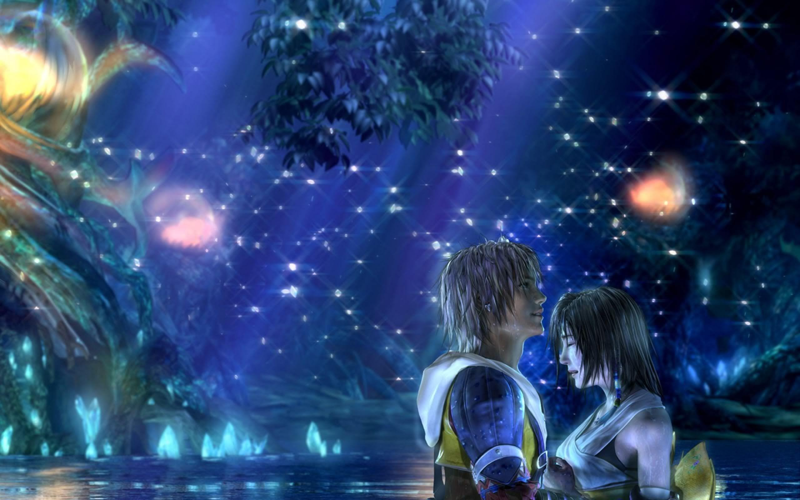

Final Fantasy X/X-2 HD Remaster
The aesthetic enhancement to NPCs and foes was the first thing I noticed. The PS4 version has smoothed out the blocky PlayStation 2-era textures that were featured in the PS3/Vita Remaster, bringing them more in line with the heroes' smooth curves. The additional color and complexity given to all of the character models, including the primary ones, is the second thing I noticed: In Final Fantasy X, I could notice the tiniest swirls on Wakka's vibrantly blue headband, and in Final Fantasy X-2, I liked how vivid Yuna's earring tassel is.
Buildings and wildlife were also given a makeover. Structures in the distance are more defined, making them feel more like a part of the landscape rather than a hazy background decoration. Water and clouds appear more visceral thanks to better light and shadow effects, while previously opaque things in dark spaces, such as facial characteristics, become easier to discern.
I discovered things I hadn't noticed before because of the sharper detail and better lighting. Yuna's fingers twitched nervously in Eternal Calm while an old guy droned on about his concerns. I witnessed an NPC's hair wave back and forth as she hopped on her toes in FFX's Zanarkand. After Yuna's thrilling rock concert in Final Fantasy X-2, I observed colorful pennants lining Luca's stadium.
The gameplay hasn't changed much, and the horribly unskippable minutes-long cutscenes haven't either. You may switch the music in Final Fantasy X from the remastered version to the original soundtrack, which is a lovely touch for fans of the original score like me. The PS4 Remaster also allows you to transfer your PS3/Vita save to the PS4, allowing you to pick up where you left off on the PS4. (I like the concept, but it seems a little excessive to buy it again if you already own one of the prior editions.)
Final Fantasy X/X-2 HD Remaster is already a fantastic way to play these classic RPGs on the PS3 and Vita, and the PlayStation 4 edition is even better, with all of the visual upgrades you'd expect from a new-generation platform.